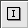
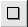

| Schriftart, Größe und Farbe (siehe auch obigen Screenshot) | |
|  | Horizontale und vertikale Skalierung und Hintergrundfarbe von Bild-Rahmen |
|  | Linienart und Stärke, Füll-Farbe und -Deckung von Rechtecken |
| Linienart und Stärke, Füll-Farbe und -Deckung von Ovalen | |
| Zoomen: Maximaler und minimaler Zoom-Faktor, Schrittweite | |
| Linienart und Stärke, Füll-Farbe und -Deckung von Linien |